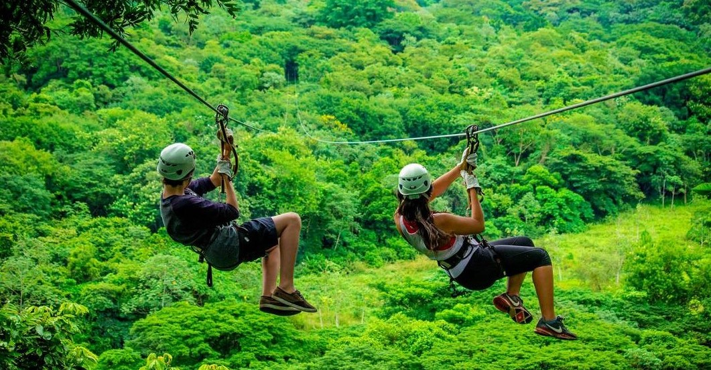

Visita nuestro blog
Conoce mas sobre la opinion de mas personas sobre un sitio de tu interes.

Muchas cosas que hacer en Costa Rica
Haz cosas como Canopy, Puentes colgantes, Caminatas por el Parque Nacional Volcan Arenal y más.

Visita nuestras hermosas playas
Muchas playas por visitar y disfrutar, puedes tomarte excelentes fotos y disfrutar de un gran paisaje.